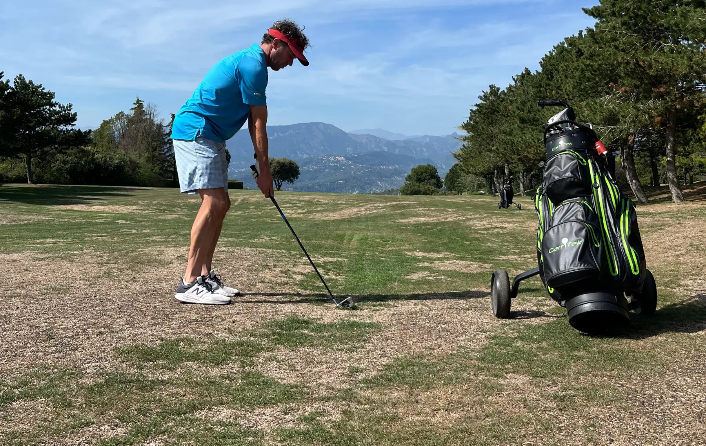
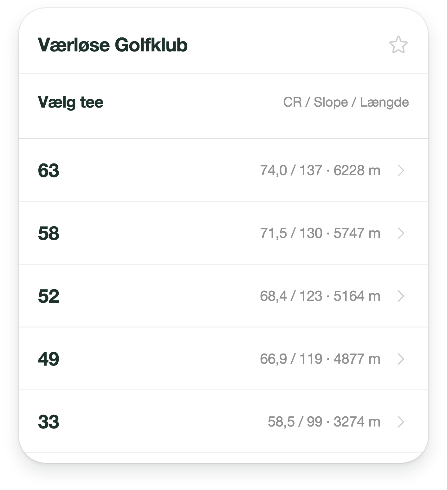

Dit spillehandicap er det antal slag, du får på den bane og fra den tee, du spiller i dag. Det regnes ud fra dit handicap, banens slope rating og banens course rating.

Hvad er forskellen på handicap og spillehandicap?
Dit handicap er dit tal som spiller, og det følger dig fra bane til bane. Spillehandicappet er det samme tal regnet om til én bestemt bane og én bestemt tee. Er banen svær, får du flere slag. Er den let, får du færre.
Hvordan beregnes spillehandicap?
Formlen i Dansk Golf Unions handicapregler er: dit handicap gange banens slope rating divideret med 113, plus course rating minus par. Resultatet rundes af til nærmeste hele tal.
Et eksempel: Du har handicap 15,2 og spiller fra en tee med slope 130, course rating 71,5 og par 72. 15,2 gange 130 divideret med 113 er 17,49. Course rating minus par er minus 0,5. Det giver 16,99, som rundes af til 17 slag.
Hvordan fordeles slagene på hullerne?
Hvert hul har en handicapnøgle fra 1 til 18, hvor 1 er banens sværeste hul. Har du 17 slag, får du ét slag på de 17 sværeste huller. Har du flere end 18 slag, får du to slag på de sværeste.
Hvad er det højeste handicap?
Det højeste handicap, du kan have, er 54,0. Dit første handicap får du, når du har afleveret en tællende score fra mindst én runde på 9 huller.
Regner Golfsocial mit spillehandicap ud?
Ja. Når du starter en runde i Golfsocial, vælger du klub, bane og tee. Appen regner med dit handicap og banens tal, så du ser dine point og stillingen, mens I spiller.
Det gælder alle i bolden. Hver spiller får point ud fra sine egne slag, så I kan spille om det samme, selv om I ikke har samme handicap.

Spørgsmål og svar
Hvad er spillehandicap?
Det er det antal slag, du får på den bane og fra den tee, du spiller. Det regnes ud fra dit handicap og banens slope rating og course rating.
Hvordan beregnes spillehandicap?
Handicap gange slope rating divideret med 113, plus course rating minus par. Resultatet rundes af til nærmeste hele tal.
Hvor finder jeg mit spillehandicap?
På klubbens konverteringstabel for den tee, du spiller fra. I Golfsocial regner appen det ud, når du har valgt tee.
Hvad er slope rating?
Slope rating viser, hvor meget sværere banen er for en spiller med højere handicap end for en meget dygtig spiller.
Hvad betyder handicap 54?
54,0 er det højeste handicap, du kan have.
Hvad er en handicapnøgle?
Det er hullets nummer i banens rækkefølge efter sværhed, fra 1 til 18. Hul 1 på nøglen er det sværeste, og dér får du dit første slag.
Golfsocial-appen
Dit golfhjem
Registrér dine runder til dit DGU-handicap, følg din udvikling, og se vennernes runder i feedet. Gratis at spille med vennerne, på iPhone og Android.